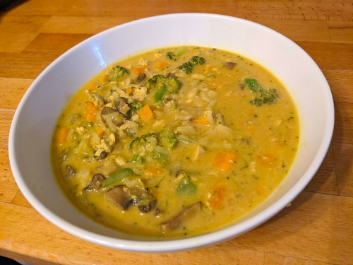

Coconut Curry

Description
A comfort food that reminds me of Indian and Thai curries I've had before and is easy to make. Makes 8 servings.
Ingredients
- 2 tbsp Organic Virgin Coconut Oil
- 1 container Mirepoix Vegetable Mix
- 3 cubes Frozen Garlic
- 5 cubes Frozen Ginger
- 2-4 tbsp Curry Powder (to taste)
- 1 tsp Organic Cayenne Pepper
- 1 large Sweet Potato (diced small)
- 1 1/2 cups Organic Broccoli Florets (about half the package, chopped small)
- 1 1/2 cups Sliced Baby Bella Mushrooms (about half the package, chopped small)
- 1 package Just Chicken White Meat Chicken (already cubed)
- 1 Lime (zested and juiced)
- 2 cans Organic Coconut Milk
- 2 cups Organic Free Range Chicken Broth
- 1 bag Frozen Organic Jasmine Rice (prepared already per directions)
- Salt and Pepper (to taste)
Steps
- In a large pot over medium-high heat, heat coconut oil.
- Add mirepoix and cook until vegetables start to soften and become translucent, about 3-4 minutes.
- Add garlic and ginger and stir until incorporated.
- Add curry powder and cayenne pepper and allow to bloom for 1-2 minutes.
- Add sweet potato, broccoli, and mushrooms; stir occasionally until vegetables start to soften, usually 4-5 minutes.
- Add chicken; stir until incorporated.
- Add lime juice and zest, coconut milk, chicken broth.
- Reduce heat to a simmer for about 5 minutes.
- Add rice and simmer for another 5-10 minutes.
- Salt and pepper to taste.
Return to Home